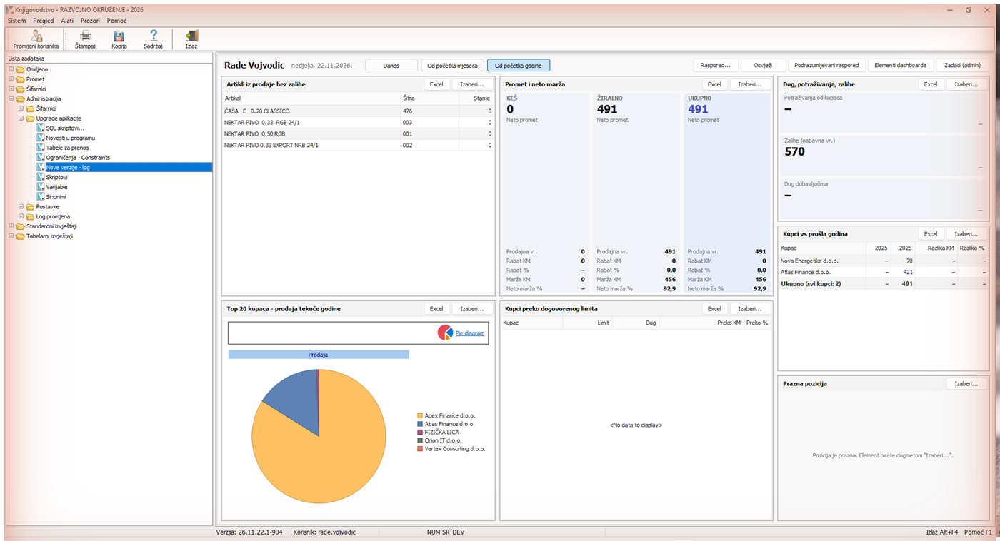

Preuzimanje
Ažuriranje je kumulativno: zadnji paket .upg sadrži sve prethodne verzije.
Prima se kroz program (Alati → Nova verzija).
Poslovna aplikacija za knjigovodstvo, robno poslovanje, finansije, izvještaje i prateće poslovne evidencije.

Knjigovodstvo ERP je Windows aplikacija za vođenje kompletnog poslovanja malih i srednjih preduzeća i knjigovodstvenih agencija, nad bazom Microsoft SQL Server. Glavna knjiga, KIF i KUF, blagajna i izvodi vode se u istom programu kao i robno poslovanje, tako da se dokumenti iz prometa automatski knjiže u finansije. Robno poslovanje pokriva primke, kalkulacije, nivelacije, izlazne račune, međuskladišnice, inventure i otpis, uz trgovačku knjigu i kartice artikala.
Maloprodaju podržava kasa (POS terminal), a narudžbe kupaca mogu stizati i preko web portala direktno u program. Modul plata i kadrovske evidencije obračunava zarade i doprinose, a moduli osnovnih sredstava, hartija od vrijednosti, proizvodnje, pravne službe i knjige pošte zaokružuju poslovanje. Dashboard na glavnom ekranu odmah po prijavi pokazuje promet, neto maržu, potraživanja, zalihe i kupce u odnosu na prošlu godinu, a raspored kartica svaki korisnik bira sam.
Svaki izvještaj može se odštampati, sačuvati kao PDF ili prebaciti u Excel, a tabelarni izvještaji se otvaraju i u ugrađenim tabelama. Prava pristupa podešavaju se po korisniku i grupi, sve do pojedinačne akcije, a promjene podataka bilježe se u log promjena. Program pri pokretanju sam provjerava novu verziju; ažuriranje je kumulativno, pa je dovoljno preuzeti samo zadnji paket, koji donosi sve prethodne izmjene i ispravke baze.
Ažuriranje je kumulativno: zadnji paket .upg sadrži sve prethodne verzije.
Prima se kroz program (Alati → Nova verzija).
Program pri pokretanju provjerava da li postoji nova verzija i nudi njeno preuzimanje.
Za pomoć, prijavu problema i zahtjeve pišite nam na e-mail.
sp-vojvodic@gmail.com